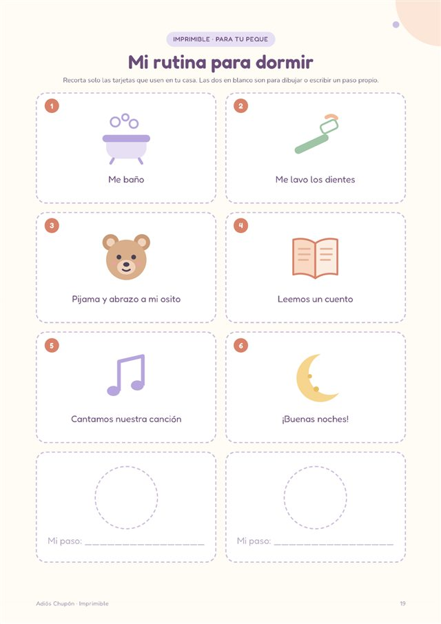
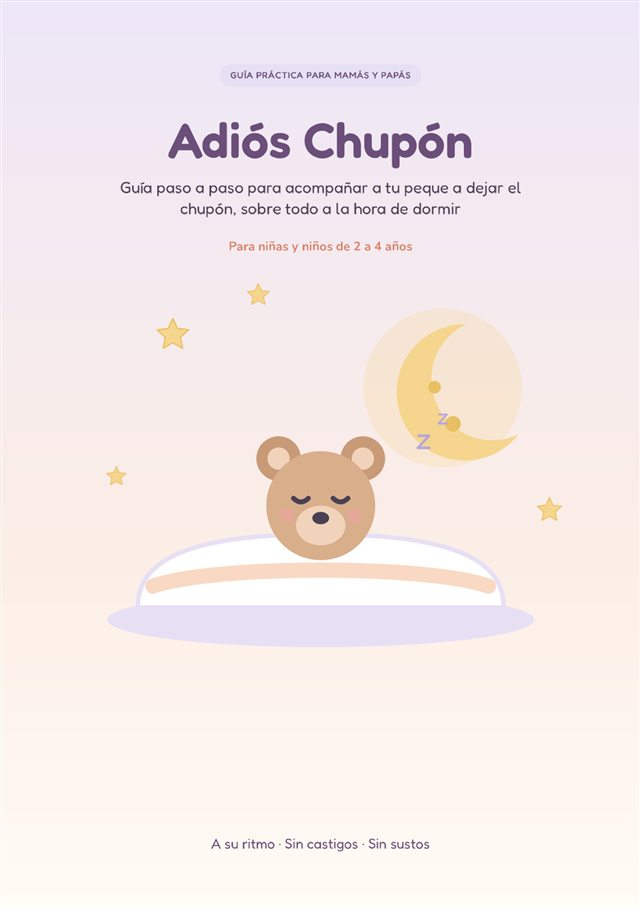

Dejas de improvisar
Sabes qué hacer hoy y cuál es el siguiente paso.
¿Tu peque solo se duerme con el chupón?
Una guía práctica para mamás y papás de peques de 2 a 4 años: qué hacer en el día, en la siesta y a la hora de dormir, a su ritmo y sin castigos.


PDF + imprimiblesPago único · IVA incluido · Pago seguro en Hotmart
No estás haciendo nada mal. Para muchos peques, el chupón es su forma de calmarse. Si se lo quitamos sin darle otra, es normal que lo vuelva a buscar. Por eso ayuda más ir por partes que quitarlo de golpe.
La solución
Adiós Chupón te dice qué hacer en cada momento del día, para que tu peque aprenda otras formas de calmarse antes de despedirse del chupón.
4 preguntas para saber dónde está tu peque hoy y qué ruta seguir.
El chupón se queda solo para dormir. Qué ofrecerle en su lugar.
Una mini rutina y un “compañero de sueño” para practicar de día.
Primero una rutina nueva y después el adiós: “poco a poco” o “con despedida”.
Sin fechas ni prisas: tú decides cuándo pasar al siguiente paso.
Una guía ilustrada y fácil de seguir. Toca una página para verla en grande.
Es un PDF para descargar: no es un curso en video ni incluye asesoría personalizada. Se lee en menos de una hora.
Sabes qué hacer hoy y cuál es el siguiente paso.
Con tarjetas ilustradas, sabe qué sigue antes de dormir.
Si llora o lo pide de madrugada, ya sabes qué decir y qué hacer.
Tu pareja, los abuelos y la guardería siguen el mismo plan.
La tabla de logros, el certificado y el cuento lo vuelven algo suyo.
Un cambio respetuoso, sin pelear con tu peque.
Muchas veces el chupón se quita de golpe y sin darle a tu peque otra forma de calmarse; por eso lo vuelve a pedir. Esta guía va por etapas (primero el día, luego la siesta y al final la noche) e incluye un Plan B para cuando lo pide de nuevo.
Depende de cada peque. La guía no maneja fechas: te ayuda a avanzar paso a paso, cuando tu peque esté listo para el siguiente paso.
Es un PDF para descargar. Recibes el acceso en el correo que registres al comprar, una vez que se confirme tu pago. La puedes leer en el celular o imprimir.
Sí. El pago se hace en la página de Hotmart, una plataforma de pagos para productos digitales. Ahí verás los métodos de pago disponibles antes de pagar.
Sí. Pagas $149 MXN (IVA incluido) una sola vez. No es una suscripción.
Sí. La guía y todos los imprimibles están en español.
Sí: los pasos son los mismos y la guía incluye ideas para invitarle a participar más. Si notas cambios en sus dientes o en su boca, consulta también a su odontopediatra.
Sí. La guía tiene una página para estos casos, con la idea de hacer un cambio a la vez. Dejar el chupón no te obliga a dejar la lactancia.
Sí. Incluye qué hacer si tienes poco tiempo y cómo ponerte de acuerdo con la guardería, sin la presión de lograrlo todo antes de esa fecha.
Sí. El PDF está en tamaño A4; en una impresora casera con hojas tamaño carta, elige la opción "Ajustar a la página". Los imprimibles tienen fondos claros para gastar poca tinta.
No. Es una guía de acompañamiento para casa. Incluye una sección sobre cuándo conviene buscar orientación profesional.
Tienes 7 días después de tu compra para pedir el reembolso, sin preguntas.
Todo por un solo pago
$149MXN
Pago único · IVA incluido · Sin suscripciones
Sí, quiero la guíaTe llevamos a la página de pago segura de Hotmart
Los métodos de pago disponibles se muestran en la página de pago.
Si después de leerla sientes que no es para ti, pide tu reembolso dentro de los 7 días posteriores a tu compra. La garantía es sobre tu satisfacción con el material, no sobre un resultado o una fecha.
Ten a la mano un plan claro para acompañarle a su ritmo, desde el día hasta la noche.
Quiero la guía · $149 MXNPago único · IVA incluido · Pago seguro en Hotmart